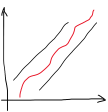

The game "Guess the number I'm thinking of"
The player is challenged to guess a random number from 1 to 100, generated by the computer. The rules are simple:
• Each round, the player plays a number;
• The computer responds if this number is greater or less than the correct number;
• In an iterative way, the player makes attempts / moves until guessing the number, in which case wins, or exceeds the maximum number of attempts, losing the game.
1 The first version of the game
Let's start with a simplified version of the game. The first part of the program consists of randomly selecting the number to guess and, additionally, reading the number of the human player.
In Python, the code that implements this initialization phase is as follows:
import random
# numero aleatorio a adivinhar
numero = random.randint(1,100)
# ler numero do jogador humano
jogada = int (input("Adivinhe o numero (1 a 100): "))
Function random.randint() generates a random number from 1 to 100.
The reading of the number by the human player is performed through the function input(). As this function reads a string of characters, it is necessary to make a type conversion, in this case, through the function int() to obtain an integer number.
Now just check if the player guessed, using an alternative decision structure:
# verifica se venceu
if numero == jogada:
print ("Parabens!")
else:
print ("Perdeu... Era o numero ", numero)
|
|
Try this first version of the game. You will certainly find it too difficult to guess the number at first try! |
2 Iterating through plays - the game loop
You certainly found it frustrating to play this game where you only had one chance to guess...
A good game has to be fair and balanced. In this case, the player must have a set of attempts to guess and, if possible, some feedback from the computer so that s/he can devise a strategy to win. We will then modify this game to allow 7 attempts and indicate to the player, in the case that the player did not guessed the number, and then indicate whether the number to be guessed is greater or smaller.
So this game is not only "interactive", it is "iterative"!
|
|
“A game is a form of interactive entertainment where players must overcome challenges, taking actions that are governed by rules, in order to meet a winning condition.” Rollings & Adams “on Game Design”
In addition to interactivity, this game also has a winning condition: hit the number in a number of attempts not exceeding the established.
|
In this new version of the game, the turns are repeated while:
• The player doesn't guess the number;
• the number of attempts does not reach zero.
The combination of the two conditions is accomplished through a conjunction, with the logical operator and:
jogada != numero and tentativas > 0
This iterative process is implemented through the conditional cycle – while:
while jogada != numero and tentativas > 0:
For each move it is necessary to read the number chosen by the player and validate if that number is correct, if it is greater or if it is less.
We will use a multiple selection structure - the if... elif... else.
if numero == jogada:
print ("Parabens!")
elif jogada > numero:
print ("Numero muito grande...")
tentativas = tentativas - 1
else:
print("Numero muito pequeno...")
tentativas = tentativas -1
• The first conditional expression checks the victory condition - guess the number.
• The second conditional expression checks whether the player has failed because his number is greater than the number to guess. If so, write a message to the player.
• The last step in the decision structure indicates that the number is very small, the other condition.
In both cases where the player does not hit, a reduction of an attempt is made.
|
|
One of the foundational principles of games is to provide an immediate feedback to the players about their actions. In this way, the players can improve their play on the next attempt. This is also one of the reasons why games are important in learning. |
|
|
The multiple selection structure includes the win condition and two conditions if the player doesn't get it right ... But where is the condition of defeat? |
The game loop is the basic structure of a game, which allows you to make several moves until the victory condition is reached ... Or the player runs out of resources (moves, lives, energy, etc.).
The game loop is preceded by the initialization of the game state.
import random
# número aleatório a adivinhar e máximo de tentativas possíveis
numero = random.randint(1,100)
tentativas = 7
|
|
Why was a maximum of 7 attempts defined?
The most effective strategy for playing this game is to divide the solution interval into two parts and, considering the answer ("bigger" / "less"), to consecutively divide the resulting interval always by 2. Following this strategy, the maximum number of attempts can be calculated using the expression: |
In Python, the code that implements the game cycle is, therefore, the following:
# ciclo de jogo
jogada = 0 # inicializar a variável
while jogada != numero and tentativas > 0:
jogada = int (input("Adivinhe o numero (1 a 100): "))
tentativas = tentativas - 1
# condição de vitória
if numero == jogada:
print ("Parabens!")
# condição de derrota
elif tentativas == 0:
print ("Perdeu... Era o numero", numero)
# lógica de jogo
elif jogada > numero:
print ("Numero muito grande...")
else:
print("Numero muito pequeno...")
This code uses a while structure to implement the game loop. This structure always repeats your code block as long as the conditional expression is evaluated as true
|
|
Try this new version of the game. You will certainly find it much more fun. |
|
|
O que poderia acontecer se a variável jogada fosse inicializada com um valor entre 1 e 100? Observe that it was necessary to initialize the variable jogada with an initial value outside the game range (1 to 100) so that the game cycle can always have at least one move. What could happen if the variable jogada was initialized with a value between 1 and 100? |
Finally, the end of the game occurs in the first two conditions of the conditional structure: by victory or by defeat. When any of these expressions are true, the cycle condition will be false and the game cycle will end shortly afterwards...
3 Procedural abstraction - functions
Games, when well designed and adapted to the player's abilities, are able to focus all their attention on the challenges of the game. This psychological state is called "flow".
|
|
According to psycologist Mihaly Csikszentmihalyi, "flow" is the mental state in which a person performing some activity is fully immersed in a feeling of energized focus, full involvement, and enjoyment in the process of the activity. In essence, flow is characterized by the complete absorption in what one does, and a resulting transformation in one's sense of time. |
|
 |
As the player progresses in the game, s/he gains skills (learns) and the tasks become easier. If the difficulty level does not increase, the player is bored and will stop playing. But if the difficulty is too high, the player feels frustrated and will also stop playing. There is a narrow strip that keeps the player in a "flowing" state. The game designer must be able to parameterize the level of difficulty in order to adapt to the player's skills. |
|
Ideally, the game can be played with another type of numerical range or another maximum number of moves. For this, the ideal is to build a function, which in addition to encapsulating the game code, allows its parameterization.
In Python, the code that implements this procedural abstraction is as follows:
import random
def jogo(tentativas, minimo, maximo):
# numero aleatorio a adivinhar
numero = random.randint(minimo,maximo)
# ciclo de jogo
jogada = 0 # inicializar a variável
while jogada != numero and tentativas > 0:
jogada = int (input("Adivinhe o numero (1 a 100): "))
tentativas = tentativas - 1
# condição de vitória
if numero == jogada:
print ("Parabens!")
# condição de derrota
elif tentativas == 0:
print ("Perdeu... Era o numero", numero)
# lógica de jogo
elif jogada > numero:
print ("Numero muito grande...")
else:
print("Numero muito pequeno...")
It is not enough to define a function for your code to be executed...
|
|
You need to call the function. Example: jogo(7, 1, 100) Test this new version of the game, experimenting with different value ranges... |
|
|
The main change compared to the previous version was the encapsulation in the jogo() function by indenting the code to define the function block. What other changes have been made? Hint: Observe the function definition jogo().
|
4 Final challenge
Play the opposite game now. This time it will be the computer trying to guess the number, between 1 and 100, that you are thinking about ... And at most in 7 attempts!
(Optional) Vary the range of values to guess...
|
|
Share your game!
|